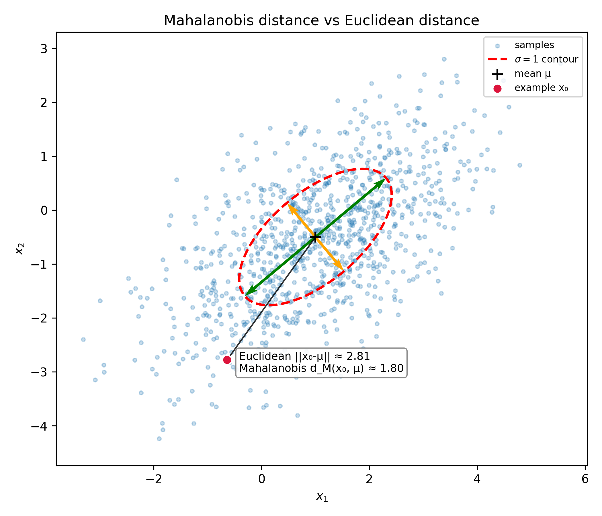
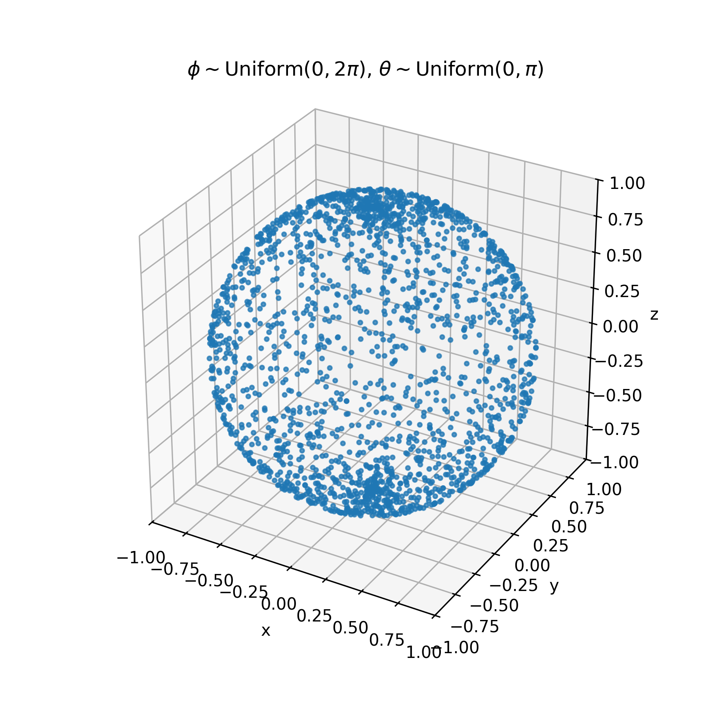
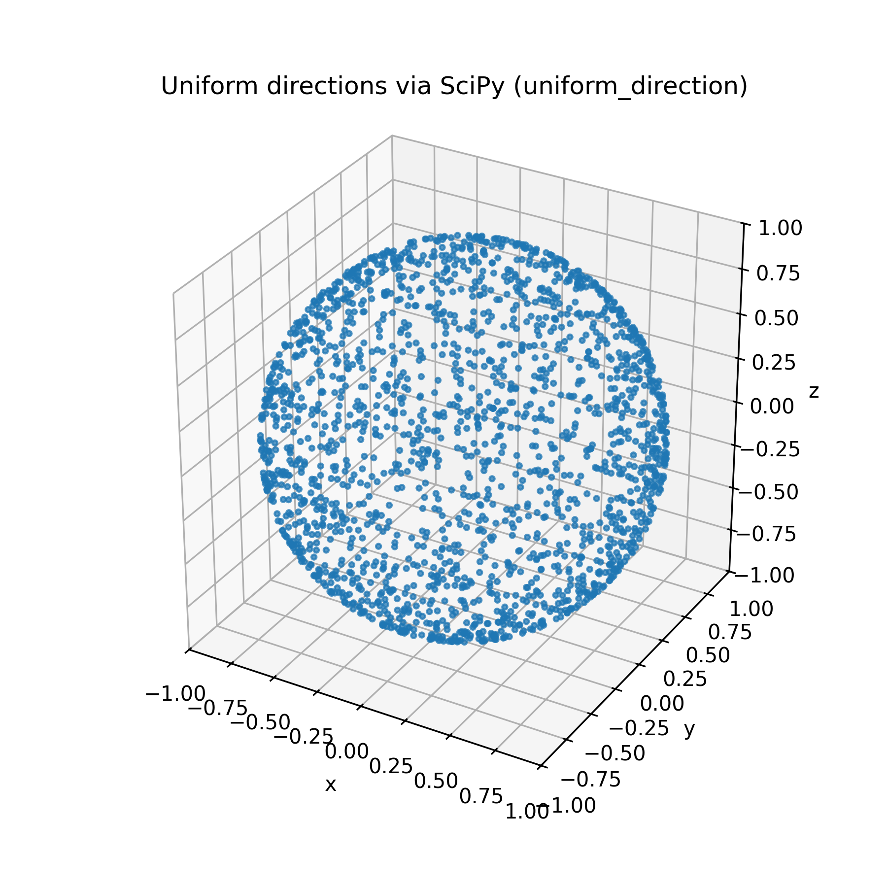
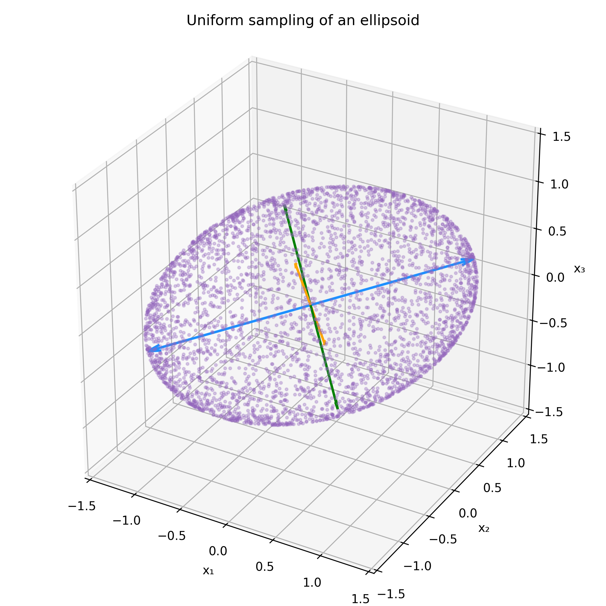

As someone with an admittably lackluster formal background in linear algebra, my recent research at Lawrence Livermore National Lab has allowed me to dive headfirst into some real-world applications of linear agebra, and I have come to appreciate the power and flexibility that reframing problems with linear algebra can give. I'd like to share some of the uses— specifically the spectral theorem— that I used throughout my internship.
The spectral theorem is a result from linear algebra on the diagonalizability of a matrix. Importantly, it implies a canonical eigendecomposition of a diagonalizable matrix $$A = Q\Lambda Q^T,$$ where $Q$ is a matrix of the eigenvectors of $A$, and $\Lambda = \text{diag}(\lambda_1, \lambda_2, \dots,)$ is a diagonal matrix of their corresponding eigenvalues. Additionally, for positive definite matrices, we can see the existance of "square root-type" decompositions taking the form
$$A = S S^{T},$$which tend to have nice properties that we can utilize. We also can see this decomposition is not unique: in particular, for some orthagonal $R$,
$$SR (SR)^T = SRR^TS^R = SS^T,$$and we see that $SR$ is a valid decomposition under the rotation $R$. It turns out these types of decompositions have very useful characteristics that I will show in a few examples below.
The Mahalanobis distance is a metric that measures the distance between a point $P$ and a probability distribution $D$, its covariance $\Sigma$, and its mean $\mu_D$, serving as a multivariate generalization of a z-score, which takes the form
$$d^2(\textbf{x}, D) = (\textbf{x}-\mu_D)^T \;\Sigma^{-1}(\textbf{x}-\mu_D), \tag{1}$$In its curent state, the interpretation of Mahalanobis distance can be a little ambiguous, especially to the likes of myself without much prior exposure to statistics and linear algebra.
Let's try to break it down a little. The Cholesky decomposition is a square root decomposition of a matrix $A$ of the form
$$A = LL^T,$$where $L$ is a lower triangular matrices, respectively. Since a covariance matrix is symmetric and positive definite, this decomposition is guarenteed to exist, and $LL^T = L^TL$. Let's now rewrite $(1)$ as
\begin{align} d(\textbf{x}, D) &= (\textbf{x}-\mu_D)^T \;L^T L(\textbf{x}-\mu_D) \\ &= ||L(\textbf{x}-\mu_D)||, \end{align}and we can see that in the Mahalanobis distance in the transformed coordinates $z = L(\mathbf{x}-\mu_D)$ is euclidean in $z$ !
What can this reveal to us about the Mahalanobis distance? Let us relate $L$ and an eigencdecomposition of $\Sigma^{-1}$,
\begin{align} &\Sigma^{-1} = Q \Lambda Q^T = L^T L \\ &\Rightarrow L = Q\Lambda^{-1/2}R \end{align}We now can see the basis $L$ rotates coordinates into the principal directions of the covariance via $Q$, and then scales each axis by $1/\sqrt{\lambda_i}$. In this basis, a unit step in the $i^{th}$ direction corresponds to taking a step in our original space in the $i^{th}$ eigenvector $v_i$ a distance of the corresponding eigenvalue $\lambda_i$.
We can see a comparison of the Mahalanobis distance and Euclidean distance of the point $x_0$ on the plot above. Notice that the euclidean distance is significantly larger than the Mahalanobis distance, as the test point is much "closer" to the distribution in the direction of one of the principal axes of the ellipse contour.
The Mahalanobis distance provides a much more informed measure of the distance from a point to a distribution, taking into account the geometry of the underlying distribution.
We saw previously how we can use the spectral theorem to determine some isotropic basis for which a distribution has no pairwise covariance. This is a relatively common practice in statistics called "whitening." However, we can also use this idea in reverse to introduce some arbitrary covariance to a data set.
One particular situation in which this can be useful is when we are interested in generating a sample from the extent of a multivariate normal distribution. Normal sampling would lead to the majority of the points landing near the mean of the distribution, leading to a lot of wasted computational power when using the drawn samples for, say, Monte Carlo error quantification.
Let us first draw a few points uniformly on a sphere. There is a small caveat— if we are to naively sample uniformly from the usual spherical coordinates $\phi \sim \text{Uniform}(0, 2\pi), \; \theta \sim \text{Uniform}(0, \pi)$, we end up with the following
Due to the extrinsic curvature of the embedding of our two dimensional $(\phi, \theta)$ plane on a sphere, we end up with additional unwanted concentration near the poles of the surface. There are a few methods to overcome this roadbump, this article on Wolfram Mathworld is a nice writeup of a few alternative methods. One of the most clever, in my opinion, is sampling from a $n$-dimensional multivariate gaussian with identity covariance centered at the origin, and normalizing of all of the samples. The multivariate gaussian density has no preference for direction, so normalized sampled vectors will be uniform. This is the algorithm implemented in $\texttt{scipy.uniform_direction}$, which we will use from now on.
Much better!
Lets call the above set of points $X$ for brevity. To introduce arbitrary covariance $\Sigma$ to $X$, lets take a square root decomposition of the covariance, for example the Cholesky decomposition; $$ \Sigma = L L^T. $$ I now claim that $$ Y = LX $$ has covariance $\Sigma$. To see this, lets just check directly. \begin{align*} \text{Cov}(Y) &= E[(LX - E(LX)) (LX - E(LX))^T] \\ &= E[L(X-E(X))(X-E(X))^TL^T \\ &= L[(X-E(X))(X-E(X))^T]L^T, \\ \end{align*} but the middle term is just $\text{Cov}(X) = I$, so $$ \text{Cov}(Y) = LL^T = \Sigma $$ Let's see this in action.
Now all that's left is scaling the points in the ellipse by some desired factor to match the desired contours of a covariance matrix.
To be honest, I'm not quite sure what exactly to call this technique. However, it was incredibly useful in saving on computation time in my most recent project.
It often occurs in scientific computing that we have data points in some high-dimensional parameter space $\theta$ that map to some lower dimensional observational space, say $x$. In my most recent paper, we examined orbits of asteroids living in a six-dimensional orbial element space, and we were interested in how they were mapped to a two-dimensional observer space at a specific time from the reference point of some observer. Due to perturbations of Keplerian orbits from general relativity, oblateness of massive objects causing gravitational harmonics, and perturbations from massive objects like Jupiter, we opt for numerical integration of some orbital element vector $\theta$ to some specified time $t$ to form a mapping from orbital element space to observer space. In other words, an exact analytical form of the mapping $f:(\theta, t)\rightarrow x$ does not exist, and it is rather expensive to evaluate computationally.
Now, if we had a best fit orbital element vector $\hat\theta$ and covariance in orbital elements $\Sigma_\theta$ from something like a curve fit, how could we determine $\Sigma_x$? Something we could do is sample a few thousand points from a 6-d gaussian with covariance $\Sigma_\theta$ to obtain a cloud of orbital elements, and propogate them to our desired observer space, where we could then compute the canonical MLE of the covariance $\Sigma_x$ in our 2-d observer space, but this is rather expensive for the aforementioned reasons.
We can do better. Let's consider the first-order expansion of $x$:
\begin{equation} x(\theta) = f(\hat \theta) + J (\theta - \hat\theta) + \mathcal{O}\left((\theta-\hat\theta)^2\right), \end{equation}where J is the $(2 \times 6)$ Jacobian
$$ \frac{\partial x}{\partial \theta} = \begin{bmatrix} \frac{\partial x^1}{\partial \theta^1} & \cdots & \frac{\partial x^1}{\partial \theta^6} \\ \frac{\partial x^2}{\partial \theta^1} & \cdots & \frac{\partial x^2}{\partial \theta^6} \end{bmatrix} $$The covariance of $x$ is then
\begin{align} \Sigma_x &= E\left[ J(\theta-\hat\theta)(\theta-\hat\theta)^T J^T \right] \\ &= J\Sigma_\theta J^T \end{align}Rewriting $\Sigma_\theta$ as an eigendecomposition $\Sigma_\theta = Q\Lambda Q^T$ (or any equivalent decomposition like the Cholesky decomposition),
\begin{align} \Sigma_x &= JQ\Lambda Q^T J^T = (JQ\Lambda^{1/2}) (JQ\Lambda^{1/2})^T \end{align}Let's look at the terms of $(JQ\Lambda^{1/2})$ to make sense of this.
\begin{align} J Q\Lambda^{1/2} &= \underbrace{ \begin{bmatrix} \frac{\partial x^1}{\partial \theta^1} & \cdots & \frac{\partial x^1}{\partial \theta^6} \\ \frac{\partial x^2}{\partial \theta^1} & \cdots & \frac{\partial x^2}{\partial \theta^6} \end{bmatrix}}_J \underbrace{ \begin{bmatrix} \Delta \theta^{11} & \cdots & \Delta \theta^{16} \\ \Delta \theta^{21} & \cdots & \Delta \theta^{26} \\ \vdots & \ddots & \vdots \\ \Delta \theta^{61} & \cdots & \Delta \theta^{66} \end{bmatrix} }_{Q\Lambda^{1/2}} \end{align}This form implies a fast method of approximating $\Sigma_x$; we can use a finite difference approximation for $(JQ\Lambda^{1/2})$, where the step sizes are determined by the $i^{th}$ column of $Q\Lambda^{1/2}$
$$ (JQ\Lambda^{1/2})_i \approx \frac{f(\hat\theta + hQ\Lambda^{1/2}) -f(\hat\theta - hQ\Lambda^{1/2})}{2h}, $$with equality when $h$ is small. This algorithm only requires $\text{Dim}(x) \times \text{Dim}(\theta) = 12$ evaulations of $f$, drastically reducing computational cost!
Thanks for reading this far and I hope that you picked up some neat tricks that you could incorporate incorporate into your projects. As always, I am still learning a lot myself so I expect there to be a few gaps in my logic or the soundness of my arguments.
I wanted to blog about these methods because I thought it was interesting how often the spectral theorem appeared in my research at LLNL; if you would like to see all of these methods in action, read my paper on asteroid predetection (currently in review)!
← Back to Home